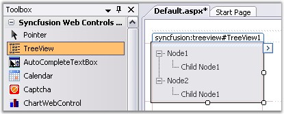
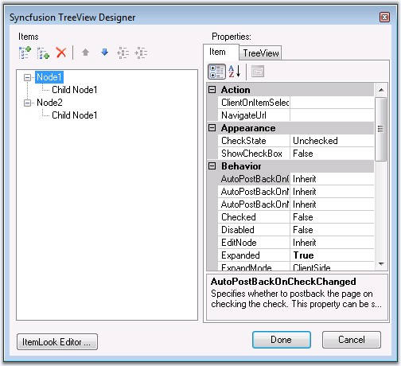
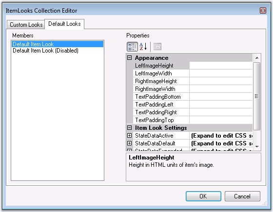

At design time tree hierarchical structure can be used to developed as follows.
1. Create a new ASP.NET Web application. For details, see Creating ASP.NET Web Application.
31. Drag the TreeView control onto the Web Form of your application.
|
[ASPX]
<cc1:TreeView ID="TreeView1" runat="server" BorderColor="Gray" BorderStyle="Solid" BorderWidth="1px" Height="80px" Width="160px"> <Items> <cc1:TreeViewNode Expanded="True" Text="Node1"> <cc1:TreeViewNode Text="Child Node1"> </cc1:TreeViewNode> </cc1:TreeViewNode> <cc1:TreeViewNode Expanded="True" Text="Node2"> <cc1:TreeViewNode Text="Child Node1"> </cc1:TreeViewNode> </cc1:TreeViewNode> </Items> </cc1:TreeView> |

Figure 170: TreeView control dragged onto the Web Form
32. Right-click the control and select Build Treeview option.
33. This will pop-up the TreeView Designer that allows you to add / remove / edit root items and child items into the instance of the TreeView.

Syncfusion TreeView Designer
34. The Syncfusion TreeView Designer displays the current structure of the TreeView and the properties of the currently selected item.
35. The Add Root Item button adds a root node.
36. The Add Child Item button adds a child node to the currently selected node.
37. The Remove Item button removes the selected node and all its child items.
38. Then click either Done button to create the treeview or Cancel button to undo the action.
39. To render styles for individual treeview node, click the ItemLook Editor... button.

Figure 171: ItemLooks Collection Editor
40. Then click either OK button to apply the style settings or Cancel button to cancel changes.
41. Then in Designer dialog box, click Done button to save the Treeview.